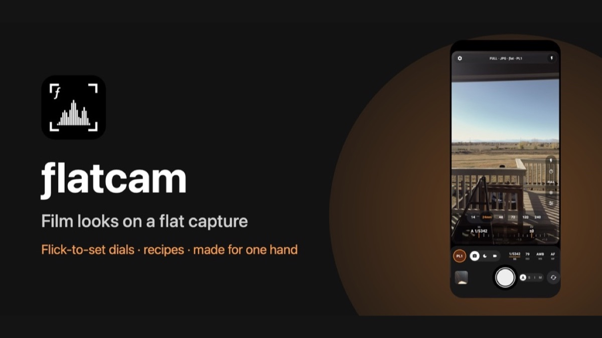

ƒlatcam

Overview
Phone cameras bake heavy processing into every photo. ƒlatcam goes the other way: it shoots flat, with natural colour, gentle contrast and room in the shadows and highlights, then applies a recipe, a film-style colour look rendered live in the viewfinder and either baked into the photo or shown only while shooting. Recipes come built in, import from .cube LUT files, or are made from any photo you like: the app reads that photo's tone, its colour in the shadows, midtones and highlights, and its saturation, and builds a look from it. Manual control runs through ruler dials that coast to a stop with a haptic click on every step, and the mode (auto, shutter priority, ISO priority or manual) follows whichever dials you turn. On Android it is built on Camera2 with an OpenGL ES 3 rendering pipeline; on iPhone on AVFoundation, Core Image and Metal. Night mode stacks several frames for cleaner low-light shots, and video records with the look baked in or as LOG.
Stack
Features
- Flat, natural capture with film-style recipes shown live in the viewfinder
- Make a recipe from any photo, or import .cube LUT files; a strength dial from a hint to the full look
- Flick-to-set ruler dials for shutter, ISO, white balance, focus and exposure, with a haptic click on every stop
- Auto, shutter priority, ISO priority or full manual, chosen by the dials you turn
- Right- or left-hand layout that keeps every control under your thumb; follows a foldable's cover and inner screens
- Photo, Night (multi-frame stacking) and Video (look baked in, or LOG; 4K 30 or 1080p 60)
- JPEG or RAW + JPEG, real focal-length lens chips, grid, self-timer
- No account, no ads, no tracking and no internet permission
Key Technical Challenge
Rendering a 3D LUT look live on the camera preview and applying exactly the same look to full-resolution photos and video, while keeping the viewfinder at the right aspect ratio through every fold state of a Galaxy Z Fold (cover screen, inner screen, tabletop, tent) without restarting the camera.
Lessons Learned
A device test harness pays for itself: scripted checks over wireless adb (cold launch, warm resume and every fold transition, with pixel statistics on screenshots and a crash-buffer check) caught layout and orientation bugs that would never show up on an emulator. Keeping the app offline by design, with no internet permission at all, made the privacy policy one sentence long.